Loading ...
|
5-4-1
|
Panama | 0 | - | 2 | England |
4-1-4-1
|
| HT 0-0 | ||||||
|
FIFA World CupSaturday 27 June 2026
|
||||||
- Venue
- New York New Jersey Stadium
- Attendance
- 80,663
- Referee
- Abdulrahman Ibrahim Al Jassim
Substitution46'
T. Rodríguez
J. Fajardo
Yellow card53'
J. Fajardo
- 2
Substitution71'
Y. Bárcenas
I. Díaz
J. Rodríguez
A. Londoño
Yellow card84'
A. Andrade
- 2
Substitution88'
C. Harvey
A. Quintero
J. Gutiérrez
É. Davis
Whistle45+4'
45+4'
Yellow card60'
J. Quansah
Goal62'
J. Bellingham
Assist: B. Saka
- 2
Substitution63'
J. Quansah
D. Spence
B. Saka
N. Madueke
Goal67'
H. Kane
Assist: J. Bellingham
Substitution71'
J. Bellingham
E. Eze
- 2
Substitution84'
E. Anderson
J. Henderson
H. Kane
O. Watkins
Panama | |
|---|---|
Goalkeeper | |
| 22 | O. Mosquera |
Defender | |
| 3 | J. Córdoba |
| 4 | F. Escobar |
| 16 | A. Andrade 84' |
| 23 | A. Murillo |
| 26 | J. Gutiérrez 88' |
Midfielder | |
| 6 | C. Martínez |
| 7 | J. Rodríguez 71' |
| 11 | Y. Bárcenas 71' |
| 14 | C. Harvey 88' |
Forward | |
| 9 | T. Rodríguez 46' |
Substitutes | |
| 10 | I. Díaz 71' |
| 15 | É. Davis 88' |
| 17 | J. Fajardo 46'53' |
| 19 | A. Quintero 88' |
| 24 | A. Londoño 71' |
England | |
Goalkeeper | |
| 1 | J. Pickford |
Defender | |
| 2 | E. Konsa |
| 3 | N. O'Reilly |
| 6 | M. Guéhi |
| 26 | J. Quansah 60'63' |
Midfielder | |
| 7 | B. Saka 63' |
| 8 | E. Anderson 84' |
| 10 | J. Bellingham 62'71' |
| 11 | M. Rashford |
| 17 | M. Rogers |
Forward | |
| 9 | H. Kane 67'84' |
Substitutes | |
| 14 | J. Henderson 84' |
| 19 | O. Watkins 84' |
| 20 | N. Madueke 63' |
| 21 | E. Eze 71' |
| 25 | D. Spence 63' |


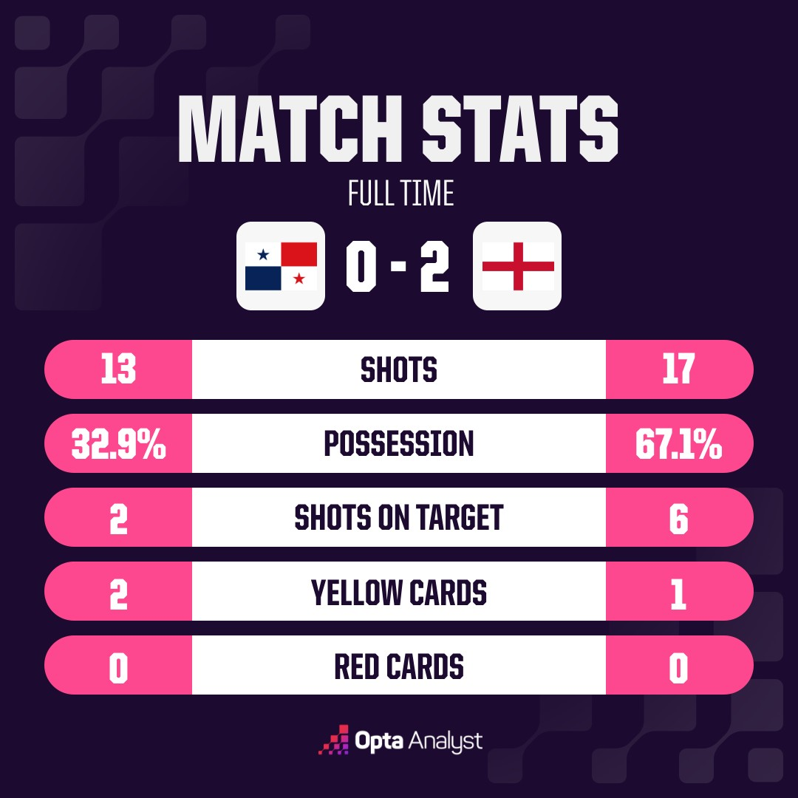
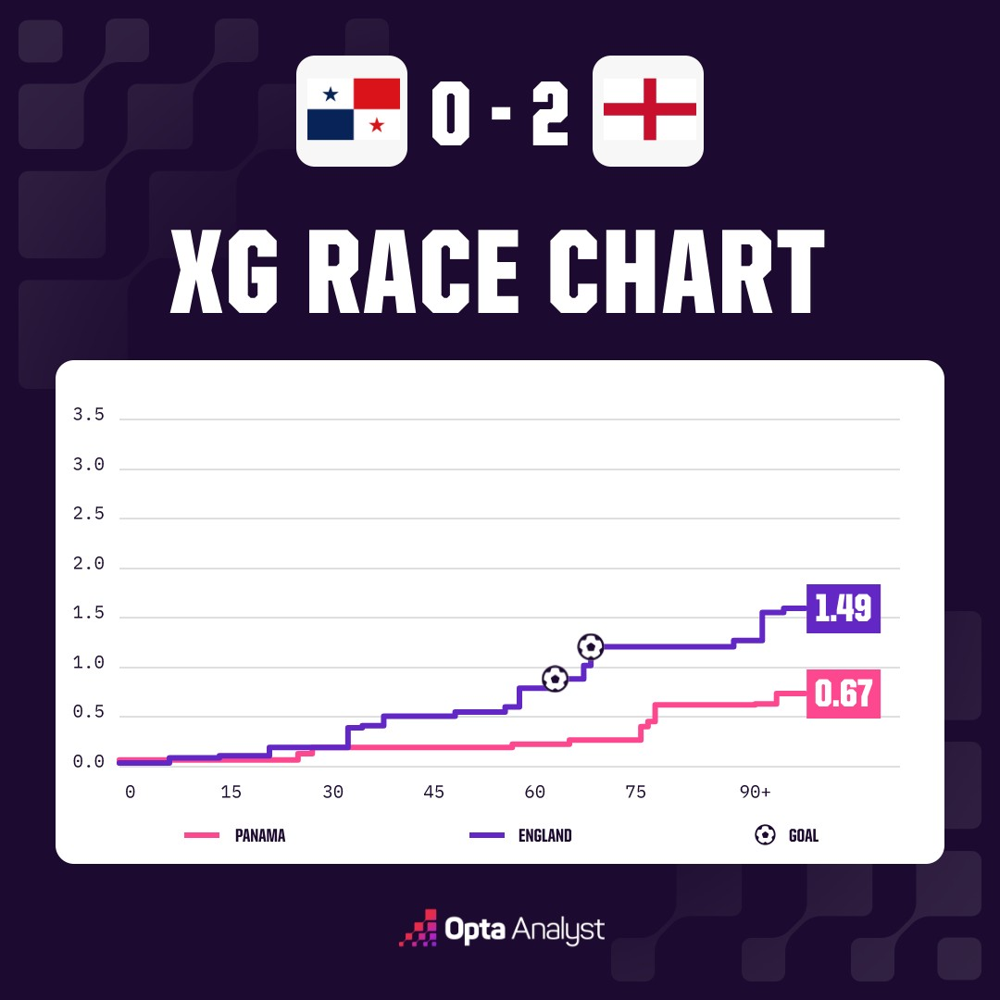
97'
Panama have failed to score in their last 3 games in the FIFA World Cup, a run of 376 minutes without a goal.
97'
England attempted 17 shots in this game, their lowest total in a single match in the 2026 FIFA World Cup.
97'
Panama have failed to score in their last 3 games in the FIFA World Cup, their longest run of games without scoring a goal in the competition (since at least 1965/1966).
97'
England are undefeated in their last 3 games in the FIFA World Cup, their last longer unbeaten streak was from 21st November 2022 to 4th December 2022, a run of 4 games.
97'
Panama have lost their last 6 games in the FIFA World Cup, their longest losing streak in the competition (since at least 1965/1966).
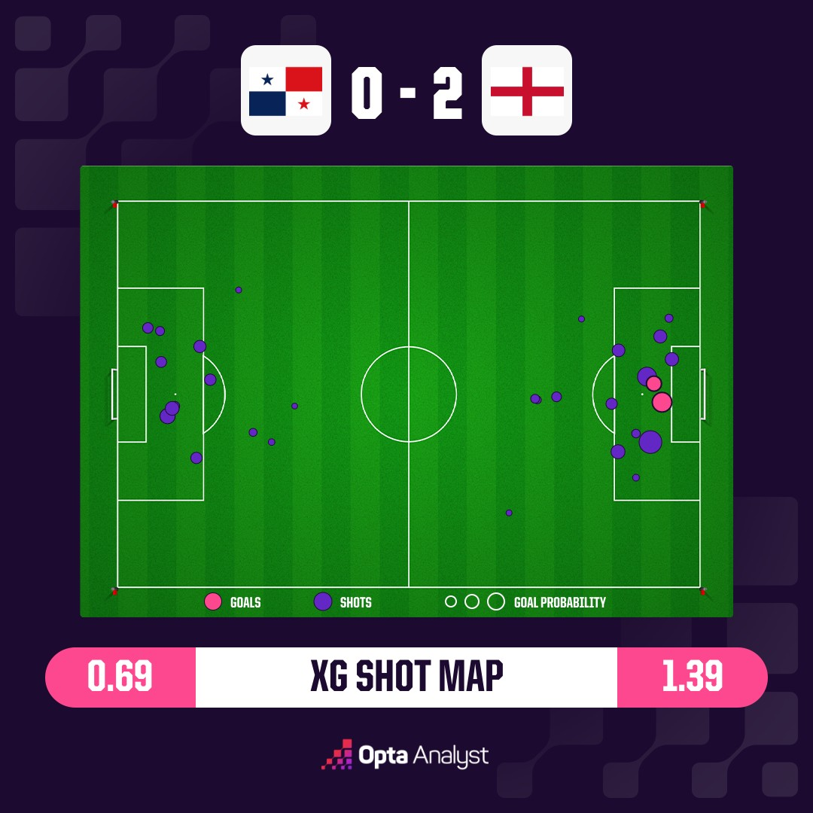
90+6'
FULL-TIME! That’s it for this game, as the referee blows the final whistle, with England getting the better of Panama 0-2.
90+6'
A rash challenge from Morgan Rogers, who sends Cristian Martínez tumbling, giving Panama a free-kick. It is not in a threatening position, but it gives them a chance to get back on the ball.
90+5'
The England defence steps up in time and there is a frustration for Ismael Díaz, who thought they were through until the flag goes up to signal offside.
90+5'
A free-kick to Panama, as Ezri Konsa goes in and fouls Éric Davis. However, England will not mind giving one away in this area too much, with plenty of distance to their goal.
90+4'
Eberechi Eze's effort is deflected out for a corner. Can England make anything of this set-piece?
90+4'
Still behind, but Panama are refusing to roll over - defensive urgency rising as they fend off more pressure and push for a late turnaround.
90+4'
A rash challenge from Alberto Quintero, who sends Jordan Henderson tumbling, giving England a free-kick. It is not in a threatening position, but it gives them a chance to get back on the ball.
90+4'
That is a disappointing effort from Éric Davis, who went for glory but got their attempt wrong, and the shot sailed off target. A frustrating moment for Panama.
90+2'
England are having plenty of the ball, with 65.16% possession in the last 15 minutes. However, they have been unable to transfer that possessional dominance into a goal during that period.
90+1'
That’s offside! A switched-on defensive line from England, as they step up at the right time to catch José Fajardo offside, and the assistant referee’s flag is up.
90+1'
Orlando Mosquera has made 5 saves, his highest total in a single match in the FIFA World Cup.
90+1'
An opportunity for England to extend their lead goes begging, as Noni Madueke is unable to convert from a good opening. Will they live to regret that miss?
90+1'
No luck! Ismael Díaz takes on a shot that, had they got it right, might have been set to test the goalkeeper, but instead it is sent off target and England come away unscathed.
88'
This could be a chance for Panama, after Nico O'Reilly fouls Amir Murillo, handing them a free-kick in a threatening area. A good set-piece from here could really test the England defense!
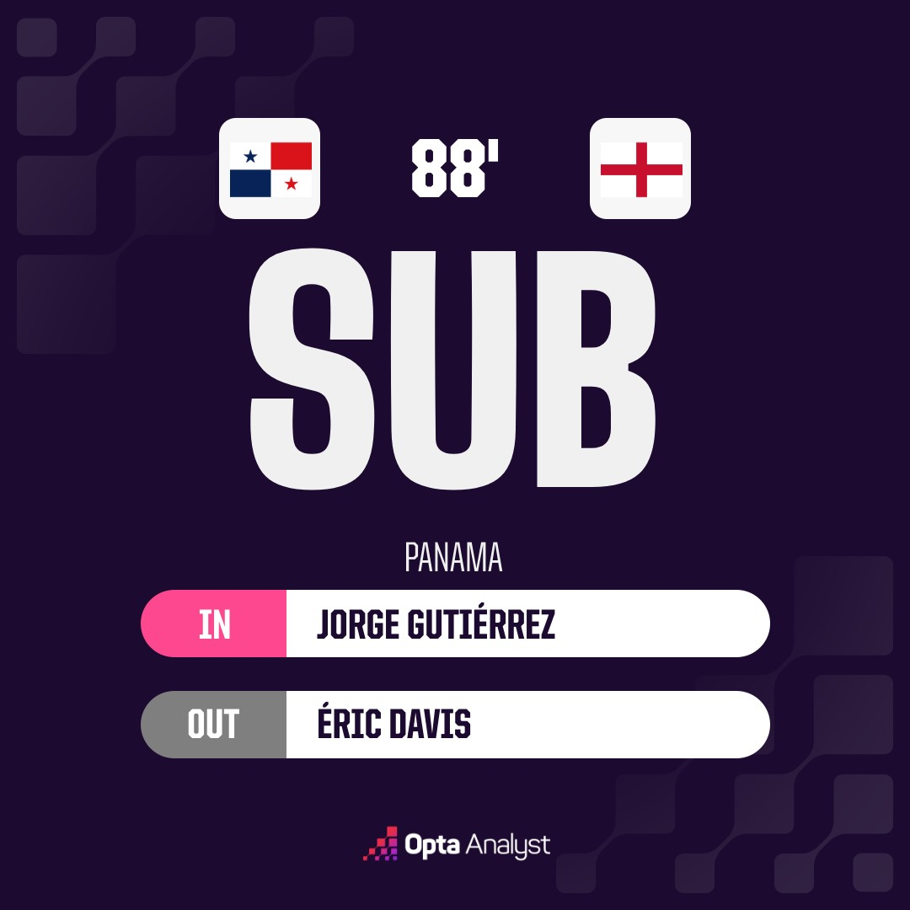
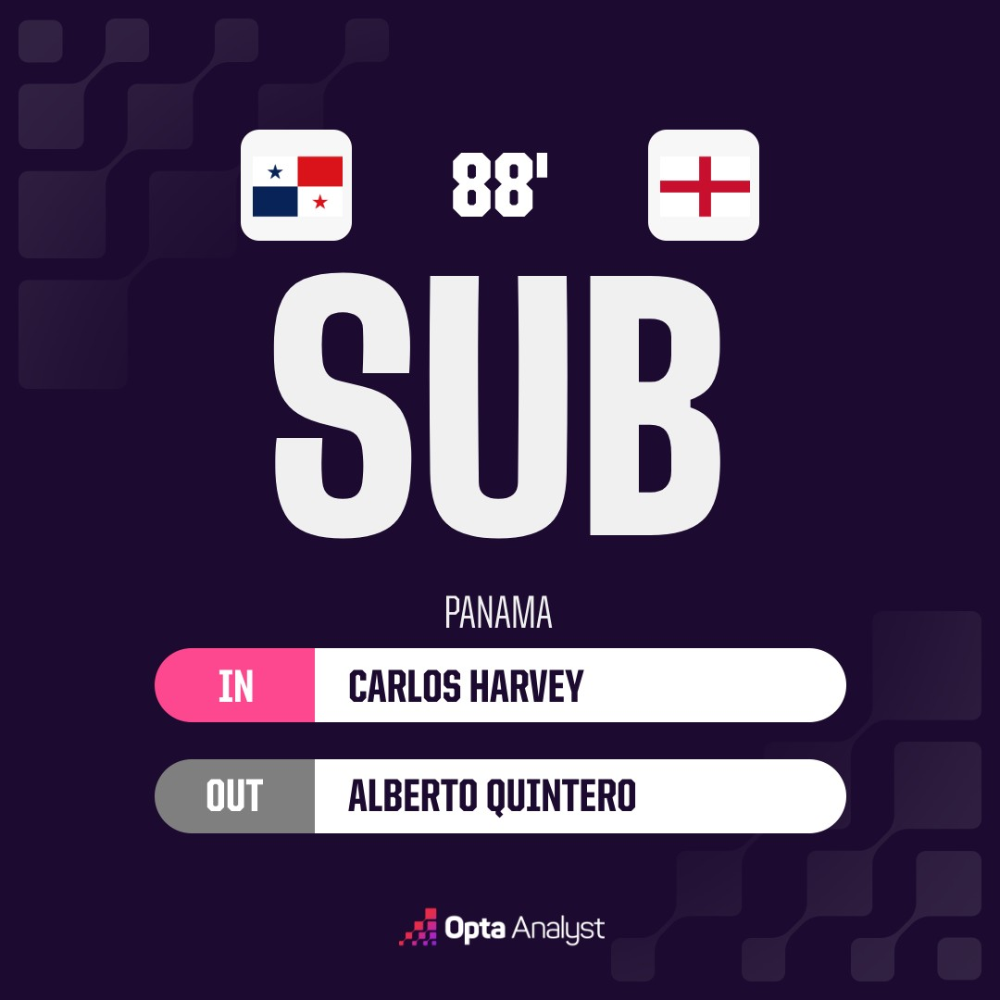
88'
Jorge Gutiérrez’s match is over as Panama decide to make a substitution. Éric Davis enters the field in what looks like a tactical change.
88'
A substitution for Panama sees Carlos Harvey replaced by Alberto Quintero. There does not appear to be any obvious sign of an injury, so that is a tactical switch.
87'
Marcus Rashford has attempted 5 shots, the first time he has attempted at least 5 shots in a match in the FIFA World Cup since facing Wales on 29th November 2022 (6 shots).
87'
MISS! The score remains 2-0, with Panama relieved after England’s Marcus Rashford goes for goal but sends their attempt off target. Not one to write home about, that one.
86'
This game is certainly in a bit of a lull now, with neither team having had an attempt at goal in the past 10 minutes. It could do with something to spark it into life. England have had more possession during the quiet spell, but are yet to do much with it.
86'
A rash challenge from Azarías Londoño, who sends Marc Guéhi tumbling, giving England a free-kick. It is not in a threatening position, but it gives them a chance to get back on the ball.
86'
Still behind, but Panama are refusing to roll over - defensive urgency rising as they fend off more pressure and push for a late turnaround.
84'
England are making a tactical change. Harry Kane is leaving the field and in their place comes Ollie Watkins – we will soon see if this switch has the desired impact.
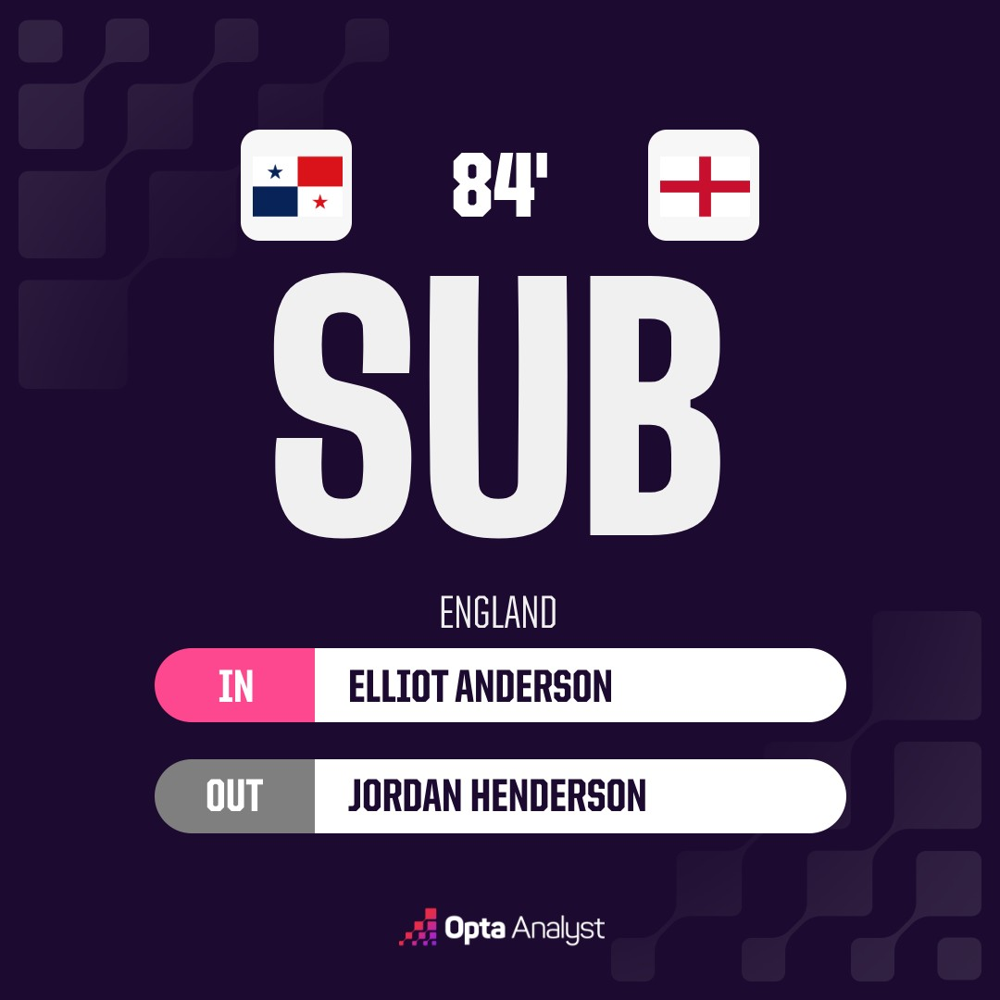
84'
England are making a tactical change. Elliot Anderson is leaving the field and in their place comes Jordan Henderson – we will soon see if this switch has the desired impact.
84'
BOOKING! Yellow card for Andrés Andrade, who is penalised for a foul. The referee waves away their remonstrations, and now they will have to be careful.
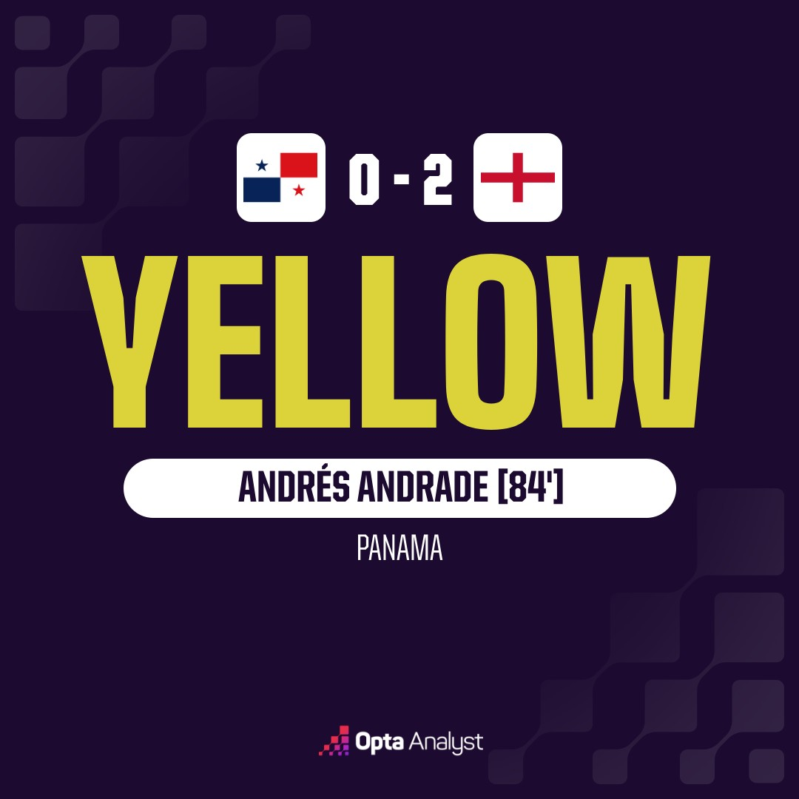
84'
A foul from Andrés Andrade on Morgan Rogers sees England win a free-kick, but it is not in a dangerous position, so Panama should be confident they can defend it easily enough.
81'
Marcus Rashford makes a run in behind but the Panama defensive line were alert, and stepped up in time to catch them offside. That run just needed to be timed better.
80'
A foul from José Fajardo on Ezri Konsa sees England win a free-kick, but it is not in a dangerous position, so Panama should be confident they can defend it easily enough.
79'
A rash challenge from Ezri Konsa, who sends José Fajardo tumbling, giving Panama a free-kick. It is not in a threatening position, but it gives them a chance to get back on the ball.
78'
That’s offside! A switched-on defensive line from England, as they step up at the right time to catch Ismael Díaz offside, and the assistant referee’s flag is up.
76'
No luck! Ismael Díaz takes on a shot that, had they got it right, might have been set to test the goalkeeper, but instead it is sent off target and England come away unscathed.
76'
BLOCK! An intervention from Harry Kane might have just prevented a goal, with the defending player getting in the way of an attempt from Amir Murillo. Solid defending there!
76'
Shot blocked! Carlos Harvey unleashes an attempt at goal, but the ball does not reach its target thanks to Djed Spence, who makes a solid block to stem the danger – for now.
76'
There are 15 minutes plus added time to go in this match. England have had more of the ball so far with a possession figure of 68.30%, while Panama have had 31.70%.
75'
Corner now for Panama, as they see a shot from Ismael Díaz deflected out of play for a set-piece. England have some defending to do, here. Could this result in a big opportunity?
75'
A free-kick to Panama, as Morgan Rogers goes in and fouls Jorge Gutiérrez. However, England will not mind giving one away in this area too much, with plenty of distance to their goal.
74'
No luck! Ismael Díaz takes on a shot that, had they got it right, might have been set to test the goalkeeper, but instead it is sent off target and England come away unscathed.
74'
That is a disappointing effort from Azarías Londoño, who went for glory but got their attempt wrong, and the shot sailed off target. A frustrating moment for Panama.
73'
A rash challenge from Harry Kane, who sends Carlos Harvey tumbling, giving Panama a free-kick. It is not in a threatening position, but it gives them a chance to get back on the ball.
72'
A foul from Nico O'Reilly on Amir Murillo sees Panama win a free-kick, but it is not in a dangerous position, so England should be confident they can defend it easily enough.
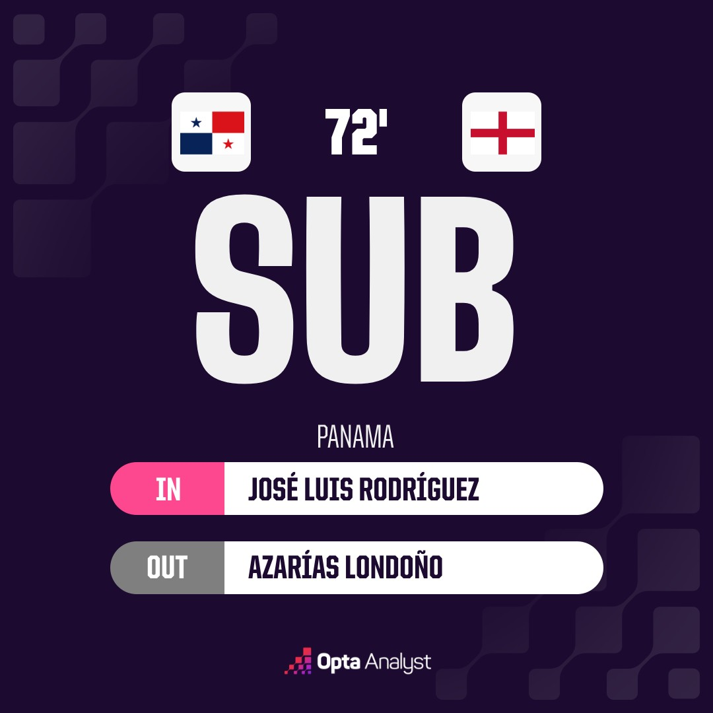
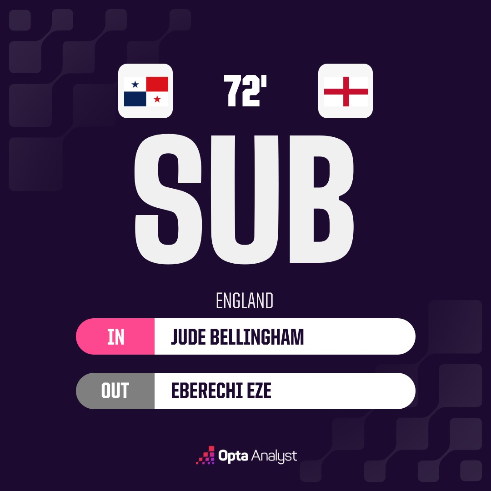
71'
Substitution! Azarías Londoño replaces José Rodríguez for Panama as the manager shuffles the pack. Can Azarías Londoño make an impression as this match continues?
71'
Substitution! Ismael Díaz replaces Yoel Bárcenas for Panama as the manager shuffles the pack. Can Ismael Díaz make an impression as this match continues?
71'
England are making a tactical change. Jude Bellingham is leaving the field and in their place comes Eberechi Eze – we will soon see if this switch has the desired impact.
67'
Jude Bellingham has assisted his first goal in the 2026 FIFA World Cup.
67'
Harry Kane has scored his 11th goal in the FIFA World Cup.
67'
Is that game over? England are now well ahead, having extended their lead to 2 goals thanks to Harry Kane’s effort. It’s now 2-0, and Panama face an uphill battle to get back into it.
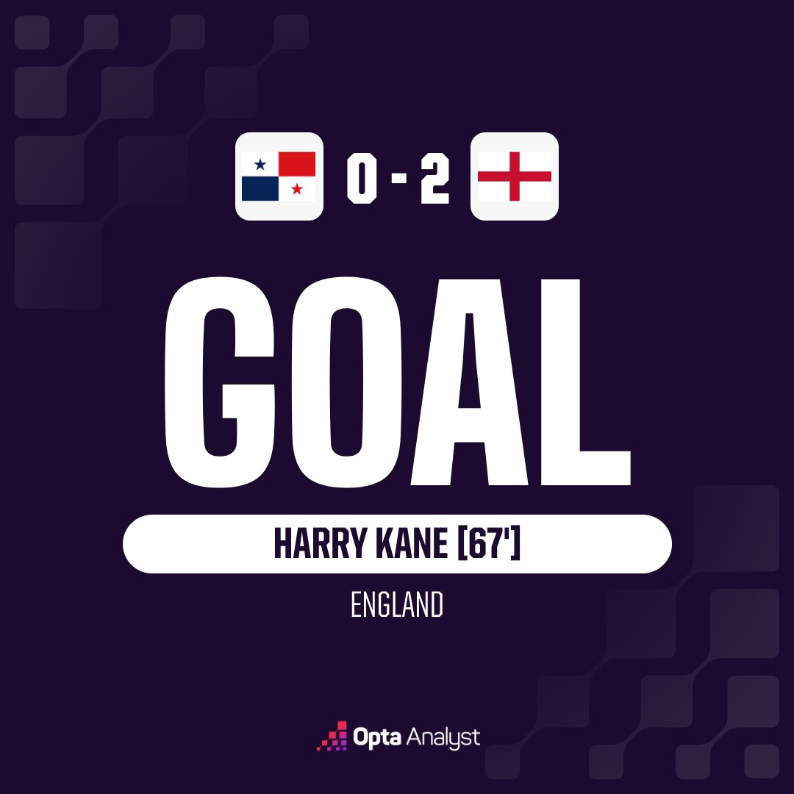
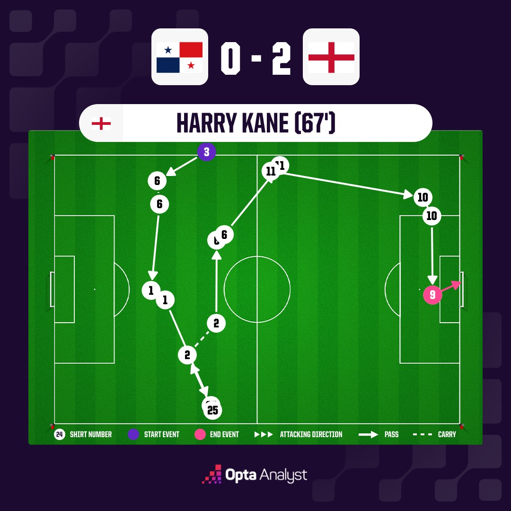
66'
BLOCKED! That was close. Harry Kane got off a shot, which was heading in, but Fidel Escobar was on hand to make a vital intervention. Great block!
66'
This match is into the last 25 minutes now, and before it goes into the final stages, let’s check on the shots. There have been 17 in total – 12 from England, and 5 from Panama. Of those attempts, 6 have hit the target – 4 from England and 2 from Panama.
64'
MISS! A shot from Amir Murillo ends up being off target. They might have done a bit better with that one, but it remains Panama 0-1 England.
64'
This could be a chance for Panama, after Djed Spence fouls José Rodríguez, handing them a free-kick in a threatening area. A good set-piece from here could really test the England defense!
63'
England are making a tactical change. Bukayo Saka is leaving the field and in their place comes Noni Madueke – we will soon see if this switch has the desired impact.
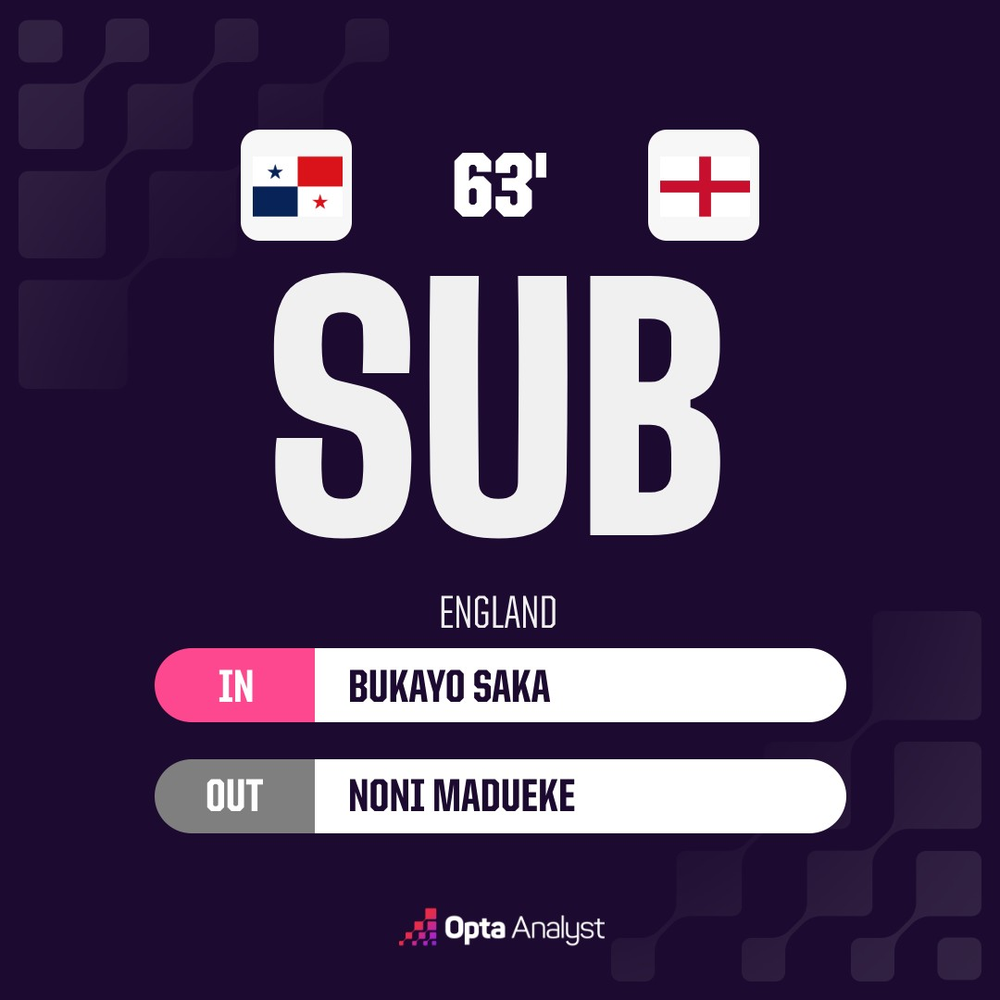
63'
An enforced substitution for England, as Jarell Quansah cannot carry on after sustaining an injury. Djed Spence has hastily warmed up and now made their way onto the pitch in Jarell Quansah's place.
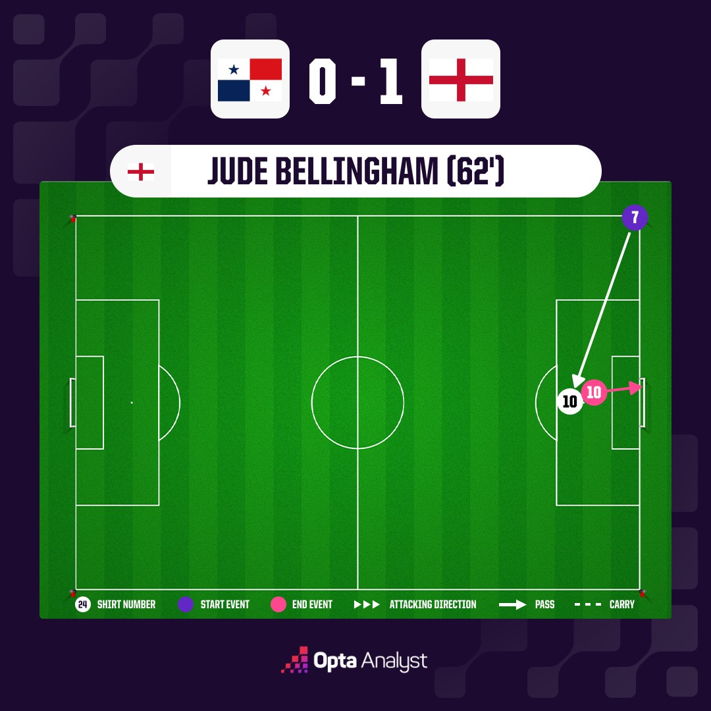
62'
Bukayo Saka has assisted his second goal in the 2026 FIFA World Cup.
62'
England have avoided defeat in their last 4 matches when scoring first in the FIFA World Cup, since a 1-2 loss to Croatia on 11th July 2018.
62'
GOAL! England move in front! Jude Bellingham provides the decisive touch from inside the penalty area to leave Panama chasing the game. It is too early to predict whether that will prove the winner, but as things stand England have the advantage!
62'
Jude Bellingham has scored his second goal in the 2026 FIFA World Cup, netting for the first time since 17th June 2026 against Croatia.
62'
England have had plenty of the ball in the last 15 minutes, with 69.64% possession compared to just 30.36% for their opponents. However, there’s not been any goal to come from that possessional dominance just yet.
60'
A yellow card for England's Jarell Quansah. They will have to walk a tightrope for the rest of this match, and Panama will likely look to target them and draw a second bookable offence.
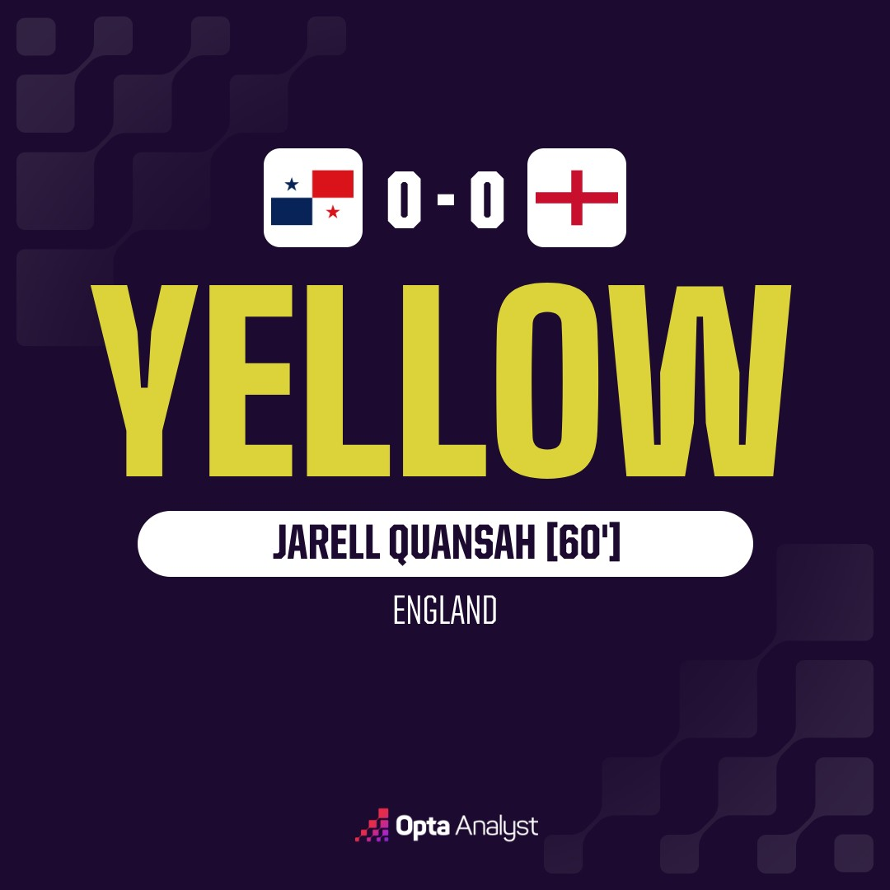
58'
Marcus Rashford goes in on Amir Murillo and concedes a foul. The free-kick is not in a particularly dangerous area from England’s viewpoint, though.
57'
MISSED! That is really poor from Harry Kane, who fails to convert from a golden opportunity, with the goal gaping. Will England pay for their profligacy, or can they put that miss behind them?
56'
MISS! The score remains 0-0, with England relieved after Panama’s José Rodríguez goes for goal but sends their attempt off target. Not one to write home about, that one.
55'
England have attempted the last 5 shots in this game, Panama last shot was taken by Carlos Harvey in the 28th minute.
55'
That is a disappointing effort from Marcus Rashford, who went for glory but got their attempt wrong, and the shot sailed off target. A frustrating moment for England.
53'
BOOKING! Yellow card for José Fajardo, who is penalised for a foul. The referee waves away their remonstrations, and now they will have to be careful.
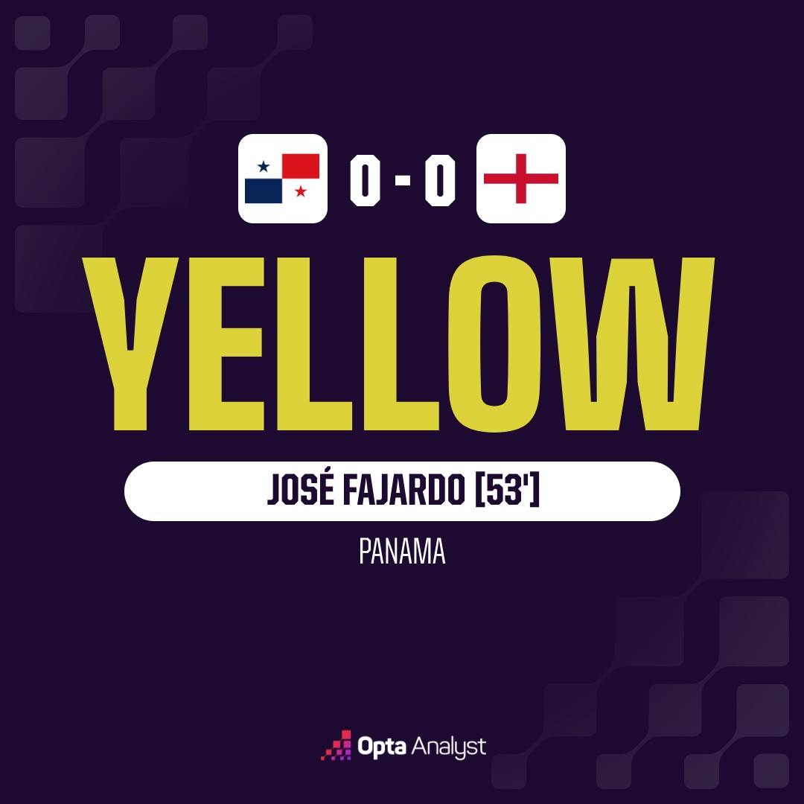
53'
Free-kick! A foul from José Fajardo on Ezri Konsa. It is well away from Panama’s goal, so it is unlikely to result in a chance for England.
47'
A rash challenge from José Rodríguez, who sends Ezri Konsa tumbling, giving England a free-kick. It is not in a threatening position, but it gives them a chance to get back on the ball.
46'
The Panama manager is looking to the substitutes’ bench, bringing on José Fajardo in place of Tomás Rodríguez. Will the change make a difference? Let’s find out!
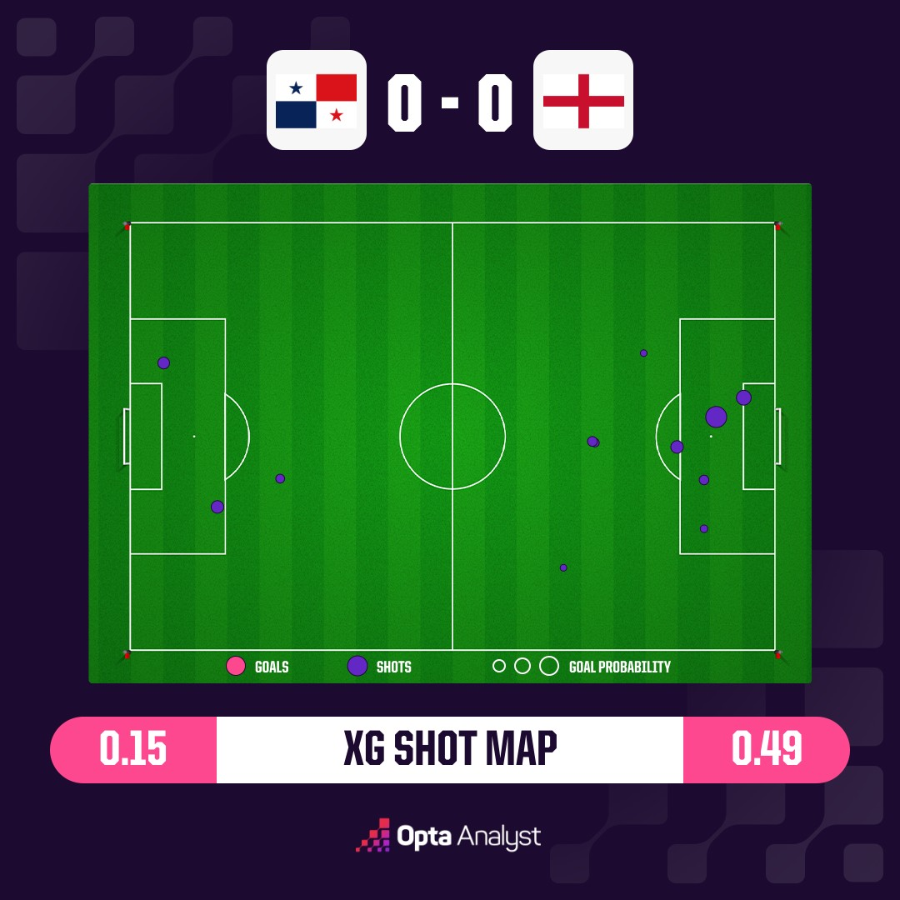
45+4'
Half-time! We reach the interval with the score level at 0-0 between Panama and England. Will we see a winner in the second half?
45+3'
MISS! A shot from Marcus Rashford ends up being off target. They might have done a bit better with that one, but it remains England 0-0 Panama.
45+1'
Can England make this chance count? They have won a free-kick in a threatening position after a foul from Carlos Harvey on Harry Kane. Will Panama's defence be tested here?
45+1'
A free-kick to England, as Yoel Bárcenas goes in and fouls Elliot Anderson. However, Panama will not mind giving one away in this area too much, with plenty of distance to their goal.
45+1'
England have had plenty of the ball in the last 15 minutes, with 75.93% possession compared to just 24.07% for their opponents. However, there’s not been any goal to come from that possessional dominance just yet.
45+1'
Offside! Harry Kane thought they were through on goal, but the Panama defence stepped up in time to catch them offside, and the assistant referee puts their flag up.
42'
A free-kick to England, as José Rodríguez goes in and fouls Elliot Anderson. However, Panama will not mind giving one away in this area too much, with plenty of distance to their goal.
41'
No luck – it’s offside! Bukayo Saka looked to dart in behind and get on the end of a pass, yet they just went too early, and the flag is up to signal offside.
39'
Offside! Morgan Rogers thought they were through on goal, but the Panama defence stepped up in time to catch them offside, and the assistant referee puts their flag up.
38'
A chance goes begging as Marcus Rashford gets off a shot that does not hit the target. They might have done better with that one, but instead it is a goal-kick to Panama.
35'
Elliot Anderson goes for goal with a strike from distance, but Orlando Mosquera is able to watch it all the way and make the save. A bit of a tester, there.
34'
The England defence steps up in time and there is a frustration for Amir Murillo, who thought they were through until the flag goes up to signal offside.
33'
No luck! Nico O'Reilly takes on a shot that, had they got it right, might have been set to test the goalkeeper, but instead it is sent off target and Panama come away unscathed.
31'
England are having plenty of the ball, with 67.88% possession in the last 15 minutes. However, they have been unable to transfer that possessional dominance into a goal during that period.
28'
A chance goes begging as Carlos Harvey gets off a shot that does not hit the target. They might have done better with that one, but instead it is a goal-kick to England.
26'
José Rodríguez's effort is deflected out for a corner. Can Panama make anything of this set-piece?
22'
England have attempted the last 5 shots in this game, Panama last shot was taken by Tomás Rodríguez in the first minute.
22'
BLOCKED! That was close. Bukayo Saka got off a shot, which was heading in, but Jorge Gutiérrez was on hand to make a vital intervention. Great block!
22'
No luck! Jude Bellingham takes on a shot that, had they got it right, might have been set to test the goalkeeper, but instead it is sent off target and Panama come away unscathed.
21'
Carlos Harvey goes in on Jude Bellingham and concedes a foul. The free-kick is not in a particularly dangerous area from Panama’s viewpoint, though.
18'
A free-kick to Panama, as Elliot Anderson goes in and fouls Cristian Martínez. However, England will not mind giving one away in this area too much, with plenty of distance to their goal.
17'
It is a corner now to England, with Panama somewhat hanging on here as they look to hold out for a positive result. Can England make something of this set-piece opportunity?
17'
This feels like a spell that could matter - England earning repeated chances to swing it in from wide areas.
17'
Free-kick! A foul from Fidel Escobar on Jude Bellingham. It is well away from Panama’s goal, so it is unlikely to result in a chance for England.
17'
A rash challenge from Tomás Rodríguez, who sends Elliot Anderson tumbling, giving England a free-kick. It is not in a threatening position, but it gives them a chance to get back on the ball.
16'
In the last 15 minutes, it is England who have dominated the ball, having seen 70.89% of the possession, yet they have not been able to go and turn that into a goal just yet, with their opponents standing firm.
15'
A foul from Tomás Rodríguez on Marc Guéhi sees England win a free-kick, but it is not in a dangerous position, so Panama should be confident they can defend it easily enough.
15'
A chance goes begging as Bukayo Saka gets off a shot that does not hit the target. They might have done better with that one, but instead it is a goal-kick to Panama.
14'
A foul from Bukayo Saka on Jorge Gutiérrez sees Panama win a free-kick, but it is not in a dangerous position, so England should be confident they can defend it easily enough.
11'
Free-kick! A foul from Cristian Martínez on Jude Bellingham. It is well away from Panama’s goal, so it is unlikely to result in a chance for England.
10'
Free-kick! A foul from Ezri Konsa on Yoel Bárcenas. It is well away from England’s goal, so it is unlikely to result in a chance for Panama.
10'
Corner! England are pushing for a goal and now they have an opportunity from this set-piece.
8'
That is a disappointing effort from Bukayo Saka, who went for glory but got their attempt wrong, and the shot sailed off target. A frustrating moment for England.
8'
England win a corner after Marcus Rashford sees a shot diverted wide by Orlando Mosquera. Can England make this opportunity count, or will Panama defend this?
7'
A rash challenge from Tomás Rodríguez, who sends Jude Bellingham tumbling, giving England a free-kick. It is not in a threatening position, but it gives them a chance to get back on the ball.
5'
It’s been tight so far, and Panama are making sure it stays that way with strong defensive discipline and well-timed clearances.
3'
Jorge Gutiérrez goes in on Bukayo Saka and concedes a foul. The free-kick is not in a particularly dangerous area from Panama’s viewpoint, though.
1'
That was hopeful! A bit of a punt from Tomás Rodríguez, who goes for goal from distance, but Jordan Pickford makes the save.
1'
KICK-OFF! And here we go! We are up and running in this clash between Panama and England at New York New Jersey Stadium. Stay tuned for all the action as it happens!
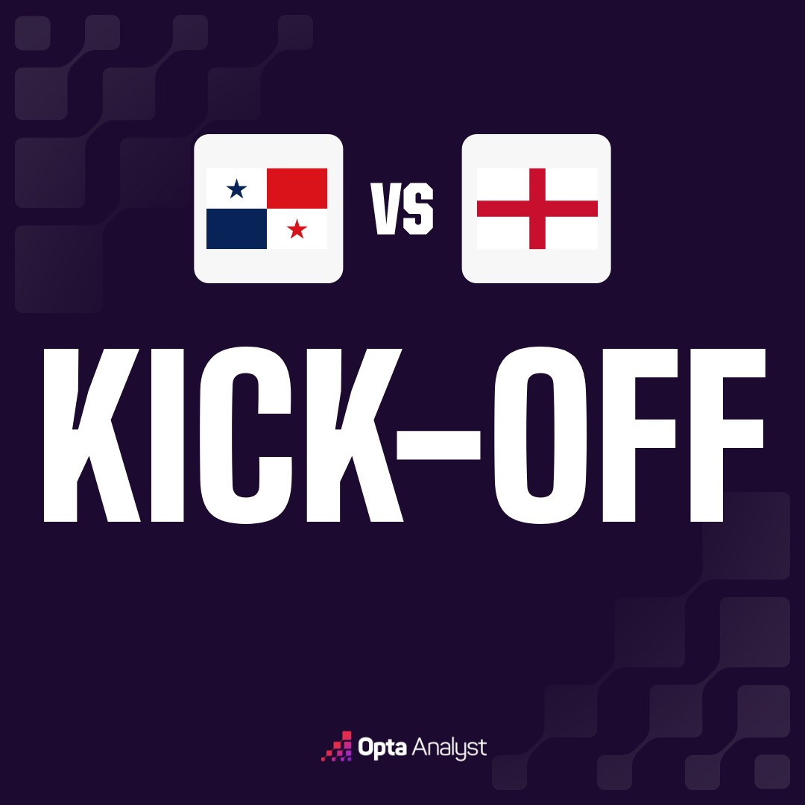
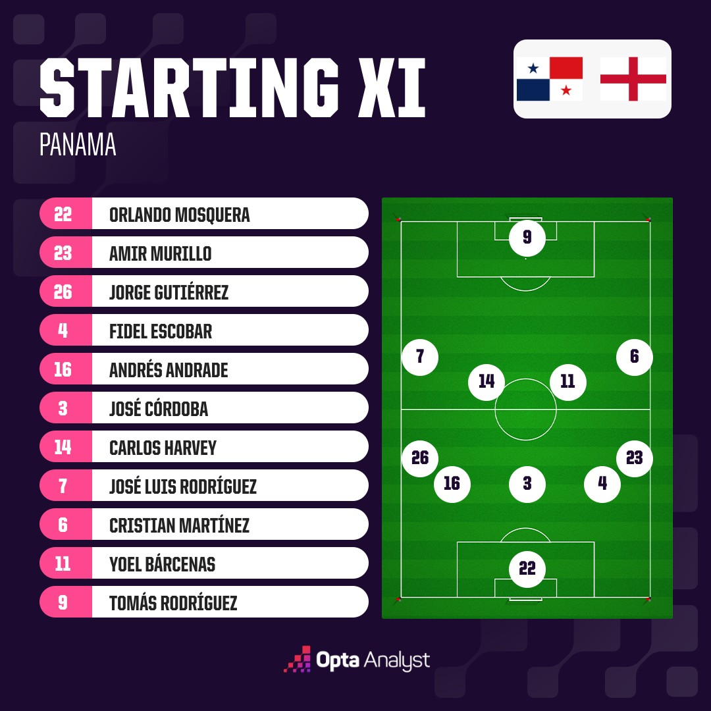
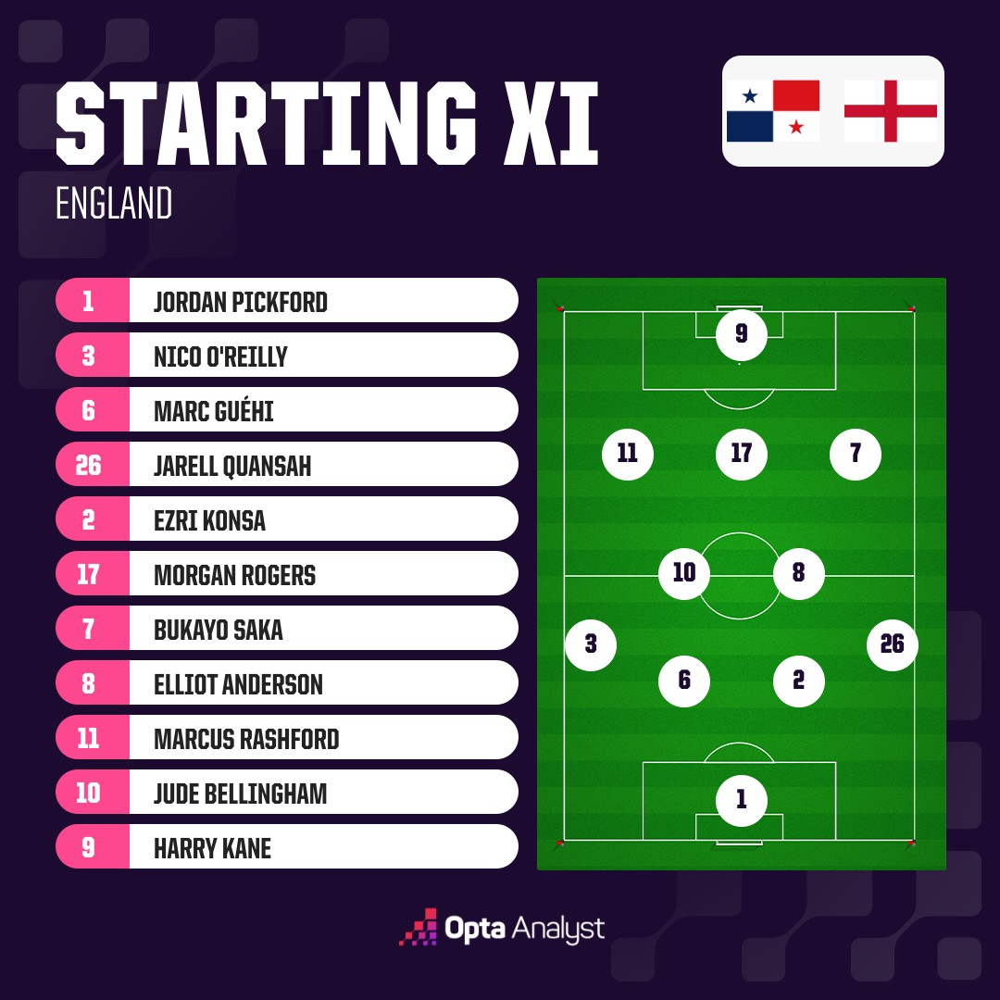
Jordan Pickford is making his 15th appearance in the FIFA World Cup.
England have won their last 7 away matches in a row
England have kept a clean sheet in the last 5 away matches
Panama take on England for a FIFA World Cup group stage match at New York New Jersey Stadium on Saturday with England looking to secure a place in the Round of 32.
Panama were defeated in their last group stage match, losing 1-0 against Croatia on June 23. They are winless in their last three games in all competitions. In nine games this year, they have two wins, three draws, and four losses.
England played out a 0-0 draw against Ghana in their last game, a June 23 group stage clash at Boston Stadium, extending their unbeaten streak to four. In 2026, they have won three, drawn two, and lost one.
England are top of the group on four points, while Panama's zero points place them fourth. England are currently in line for the Round of 32, while Panama are facing elimination.
Elsewhere in the group, Ghana are second on four points, well-positioned to advance to the Round of 32. Croatia are still in contention for a round of 32 place, sitting third on three points.
The previous fixture between the teams saw England win 6-1 in a 2018 World Cup match at Sovcombank Arena in June 2018. Harry Kane led the English side with goals in the 22nd, 46th, and 62nd minute. John Stones also found the net twice. Felipe Baloy scored Panama's only goal in the 78th minute.
Panama have yet to score in World Cup play this season. Kane has been the leading attacking threat for England, scoring twice in the current World Cup campaign, including one match-opening goal.
Panama are in the midst of a scoring slump recently, as they have gone 221 minutes in all competitions without scoring. They last found the net against Bosnia-Herzegovina in a 6 June friendly.
In their last six matches in all competitions, Panama have won two, drawn one and lost three. The Panamanian side scored nine and conceded 12 in that period, scoring first in two of the six contests. They had four first-half goals, while their opponents netted three times in the first 45 minutes. England have won three, drawn two and lost one in their last six. The English side scored nine and conceded four in that period, netting first in four of the six. They had four goals in the first half, while their opponents netted three times before the break.
-
General
Possession 32.9% 32.87467.12667.1% Possession lost in defensive half 51 511717 Possession lost in middle third 45 453838 Duels 106 106106106 Duels success rate 40.6% 40.56657.54757.5% Aerial duels 28 282828 Aerial duels won 39.3% 39.28660.71460.7% Successful dribbles 6 61010 Fouls won 13 131616 Offsides 4 444 Corner awarded 3 377 -
Distribution
Passes 268 268558558 Long passes 54 543636 Long passes proportion (%) 20.1% 20.1496.4526.5% Passing accuracy 75.4% 75.37387.81487.8% Passes in opponents' half 105 105346346 Passing accuracy in opponents' half (%) 59.0% 59.04884.10484.1% Total passes in the final third 54 54182182 Passing accuracy in final third (%) 53.7% 53.70476.37476.4% Forward passes 180 180361361 Forward passes (%) 67.2% 67.16464.69564.7% Through balls 1 11010 Final third entries 38 386868 Penalty area entries 17 174242 Total open play crosses 5 51919 Crosses 9 92525 Crossing accuracy 33.3% 33.3331616.0% -
Attack
Goals 0 022 Shots 13 131717 Shots on target 2 266 Blocked shots 3 333 Headed shots 2 233 Shots outside the box 5 555 Shots inside the box 8 81212 Shots accuracy excluding blocked shots 20.0% 2042.85742.9% Shooting accuracy 15.4% 15.38535.29435.3% Key Passes 9 91212 -
Defence
Tackles 16 161818 Tackles success rate 68.8% 68.7594.44494.4% Clearances 34 342020 Interceptions 6 655 Recoveries 48 484949 Attacking third recovery 2 277 Defensive third recovery 31 312525 Midfield third recovery 15 151717 Recoveries in attacking half (%) 4.2% 4.16714.28614.3% -
Discipline
Fouls conceded 16 161313 Yellow cards 2 211 Red cards 0 000